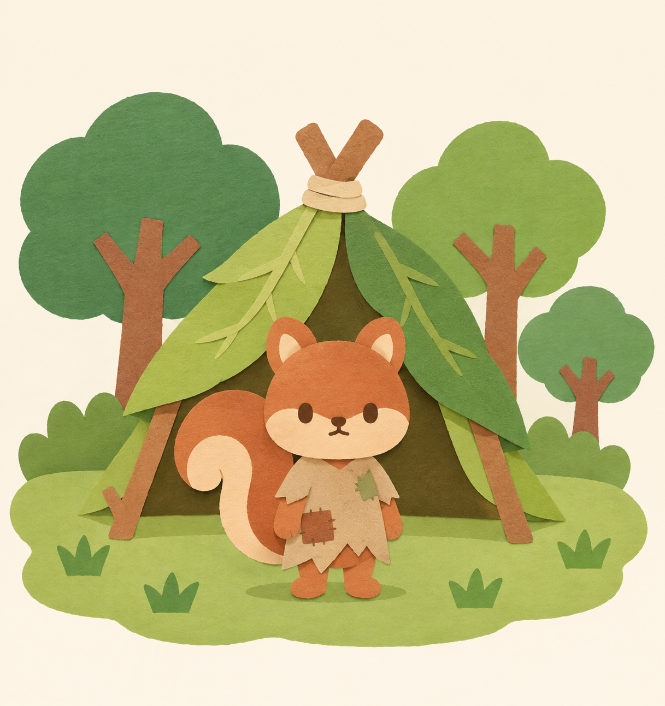
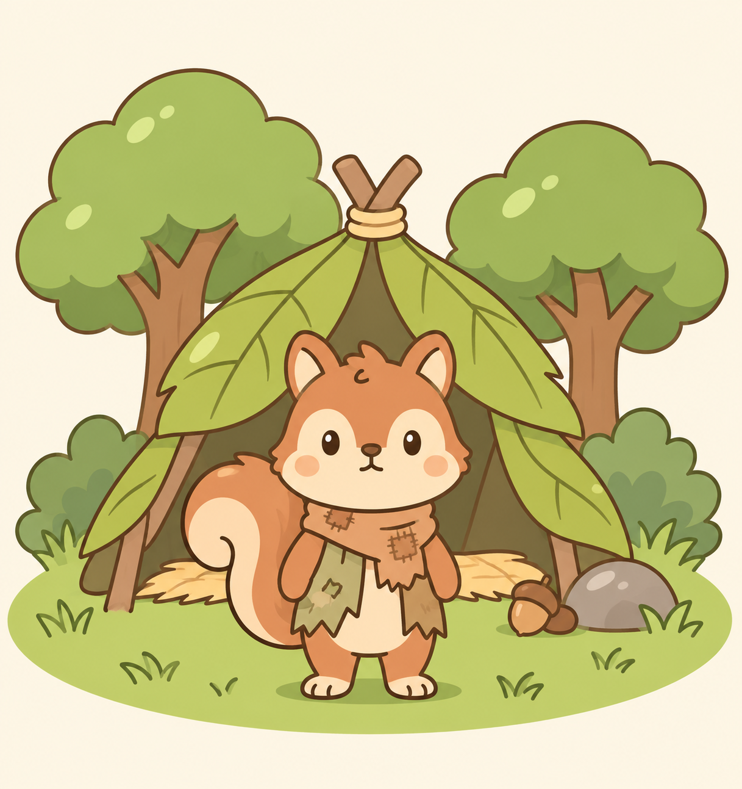
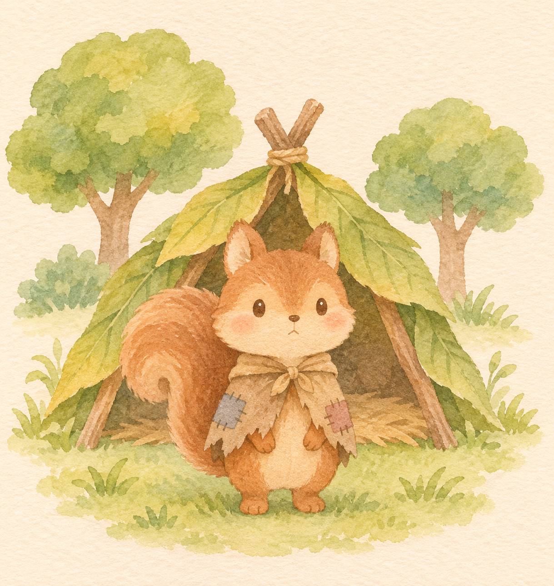
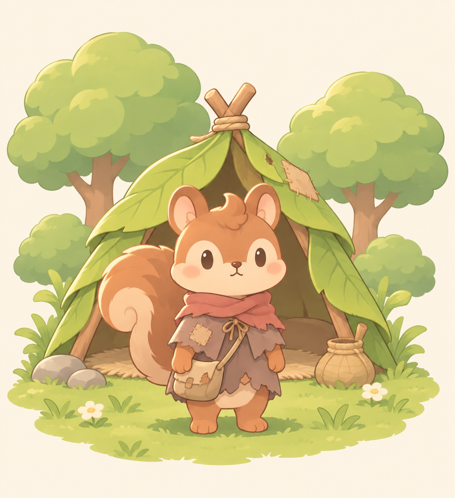

선물의 숲 그림체 시안 비교
같은 장면(흙수저 다람쥐 + 나뭇잎 텐트)을 스타일만 바꿔 뽑은 4개 시안입니다.

겹겹이 오린 종이 질감, 단색 조각. 동화책 느낌이 가장 강함.

얇은 갈색 외곽선, 그라데이션 최소. 요청하신 "깔끔한" 방향에 가장 가까움.

번짐과 종이 결. 따뜻하지만 UI와 함께 쓰면 화면이 흐려 보일 수 있음.

부드러운 2톤 그림자, 얇은 하이라이트. 파스텔 무드와 완성도의 균형.
추천: D (파스텔 무드를 유지하면서 깔끔함도 있음, 2D 웹에서 구현하기 쉬움)
차선: B (가장 깔끔하지만 개성이 약함)
차선: B (가장 깔끔하지만 개성이 약함)
고르실 시안을 알려 주세요. 선택한 스타일을 고정문으로 동결하고 주인공 표정 5종부터 생성합니다.